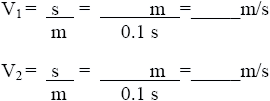

| Objetivo: |
Identificar el movimiento variado.
|
| |
| Introducción: |
|
El movimiento variado es el más común dentro del movimiento mecánico de las partículas, este se presenta cuando la aceleración
es variable con respecto al tiempo, con lo que la velocidad y posición varían de maneras muy distintas.
Este movimiento es el mas generalizado, del cual el MRU, el MRUV, el MCU, el MCUV, o el movimiento parabólico son casos
especiales del mismo.
|
|
|
| Desarrollo Experimental: |
|
Montaje de acuerdo a la ilustración (Figura 1).
Preparación:
- Colocar el carrito sobre la pista.
- Colocar el generador de marcas de tiempo al final de la pista.
- Colocar en el otro extremo el jinete, el cual deberá evitar que el carrito ruede hacia abajo.
- Tiramos a través del generador de marcas de tiempo de una cinta metalizada y la fijamos al carrito por medio de una etiqueta adhesiva.
- Aseguramos el otro extremo de la cinta registradora a la pinza de cocodrilo en el generador de marcas de tiempo.
- Operar el generador de marcas de tiempo en posición 100 ms, con lo que hará una marca sobre la cinta registradora cada 0.1s.
- Conectar el generador de marcas de tiempo a una tensión alterna de 15 V.
Experimento 1:
Ponemos la llave en "100ms" y movemos el carro con la mano sobre la pista.
Intentamos llevar a cabo el movimiento de tal manera que la velocidad del carro primero aumente y después disminuya de
nuevo. Para ello, primero tiramos lentamente y luego (a partir del centro de la pista) rápidamente y al final de nuevo lentamente. Al
llegar el carrito al final de la pista paramos el marcador (posición central) y retiramos la cinta registradora del soporte.
Primero tomamos de la parte inicial dos puntos de marcación que se encuentren muy próximos entre sí y determinaremos la
distancia entre ellos. Luego escogeremos dos puntos que posean mayor distancia entre sí. El intervalo de tiempo entre dos marcas
es 0,1 seg. A partir de la distancia medida y del tiempo calcularemos para ambos casos la velocidad.
 |
| Resultados y Conclusiones: |
|
En un movimiento acelerado aumenta el intervalo entre los puntos de marcación, mientras que en un movimiento retardado
disminuye dicho intervalo.
En este experimento el carrito lleva a cabo un movimiento en el cual en intervalos de tiempo iguales no recorre distancias iguales.
A este tipo de movimiento lo llamamos "movimiento variado".
|
|
|
|